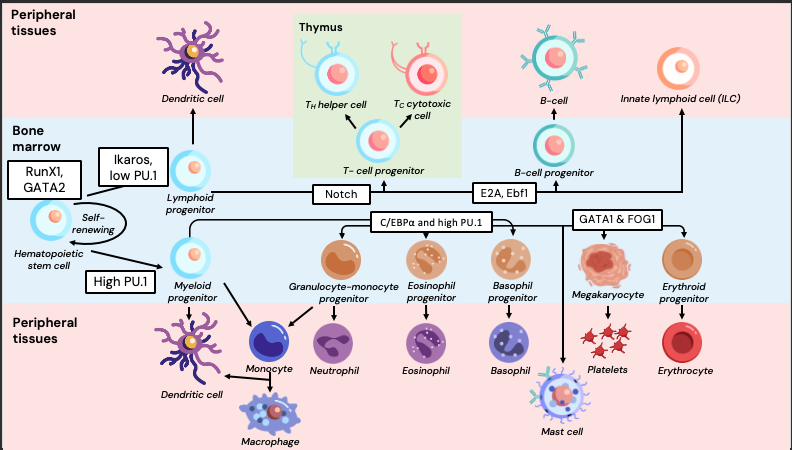
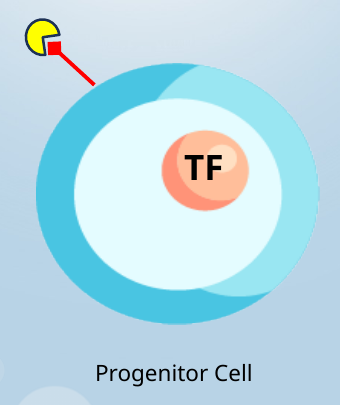

1. Hematopoietic lineage
Choose the mature cell at each destination in the lymphoid or myeloid branches. This simplified diagram uses accessible dropdowns in place of drag-and-drop.
View original hematopoiesis diagram

Hematopoietic stem cell
↓
Multipotent progenitor
↓
Multipotent progenitor
Lymphoid progenitor
Myeloid progenitor
2. Myeloid or lymphoid?
Classify the cells by lineage. Dendritic cells can arise from both lineages, as described in the lecture.
3. Identify the signaling components
Use the lecture illustration to identify the external growth factor, the surface receptor, and the transcription factor inside the nucleus.
